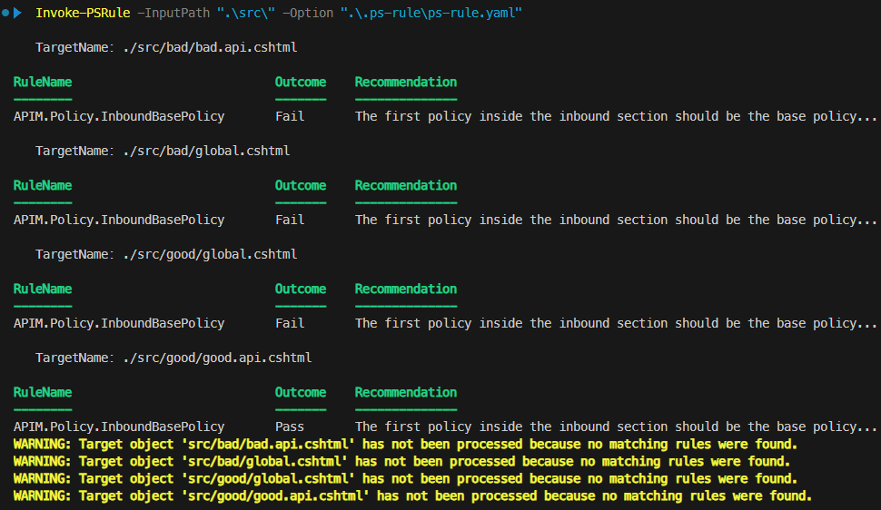
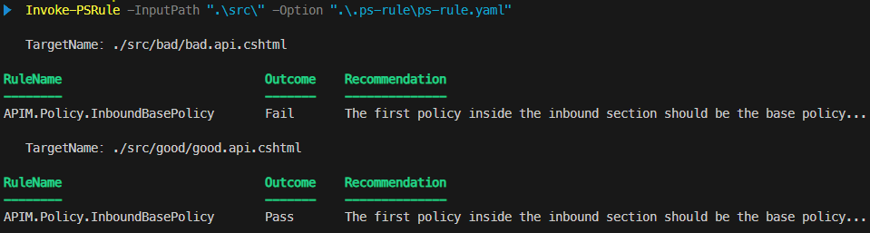

Validate API Management policies with PSRule

I’ve been working with Azure API Management for a while now, and one of the challenges I’ve faced is finding a reliable way to validate the XML policies I write. When working with .NET, tools like SonarQube are available for code quality checks, but these tools don’t support the specific checks I want to perform on the policies used in Azure API Management.
After some searching, I discovered PSRule—a cross-platform PowerShell module designed to validate infrastructure as code (IaC) files and objects using PowerShell rules. PSRule was created by Bernie White and is hosted on Microsoft’s GitHub account here. It’s also integrated into Microsoft Defender for Cloud as part of Template Analyzer.
In this blog post, I’ll demonstrate how to use PSRule to validate your Azure API Management policies.
Table of Contents
- Requirements
- Prerequisites
- Import policies using convention
- Implement first rule: inbound section should start with base policy
- Filter on scope
- More rules
- Handle invalid XML syntax
- Suppressions
- PSRule for Azure
- Conclusion
Requirements
I usually use Bicep to deploy my policies. While it’s possible to specify policies directly within a Bicep file, I prefer to store them in separate files. This approach makes the policies easier to manage and maintain. I typically use the .cshtml file extension for these policy files, as it enables IntelliSense for policies when using the Azure API Management for VS Code extension. So, PSRule will need to recognize these .cshtml files as API Management policies.
As you may know, policies in API Management can be applied at different scopes. We’ll be creating several custom rules, some of which will apply to all scopes, while others will be specific to certain scopes. Since the policies themselves don’t indicate their scope, we’ll use the file names to determine this. For example, a file named test.api.cshtml will apply to the API scope, while a file named test.operation.cshtml will apply to the operation scope.
We’ll create the following custom rules:
- The inbound section should always start with a
basepolicy to ensure that critical logic, such as security checks, is applied first. This rule should apply to all scopes except for the global scope and policy fragments. - Files with the
.cshtmlextension should follow the naming convention and specify the scope. - The subscription key header (
Ocp-Apim-Subscription-Key) should be removed in the inbound section of the global policy to prevent it from being forwarded to the backend. - The
set-backend-servicepolicy should use a backend entity (by setting thebackend-idattribute) to make the backend configuration reusable and easier to maintain. - Files containing API Management policies should have valid XML syntax.
Prerequisites
Follow the instructions on Install PSRule to install PSRule. Please note that this blog post is written using version 2.9.0 of PSRule.
We’ll also need some sample policies to test our rules against. You can download them here.
To get started, create a new root folder and unzip the sample policies into this folder. After unzipping, your folder structure should look like this:
/your-root
/src
/good
global.cshtml
good.api.cshtml
/bad
global.cshtml
bad.api.cshtml
Examine the different policy files provided. The files located in the good folder conform to the rules that we will establish, while those in the bad folder do not.
Import policies using convention
At this moment in time, PSRule doesn’t support loading XML files out-of-the-box. I’ve created an issue for this on Github, which can be found here. Luckily, PSRule is extensible, and Bernie White, the creator of PSRule, has provided a sample in my issue that we can use to load XML files. It uses a convention.
Conventions, rules and other PSRule related files are commonly stored in a .ps-rule folder in the root of your repository as described here. You can create this folder in your root.
Inside the .ps-rule folder, create a file named APIM.Policy.Conventions.Rule.ps1 (the .Rule.ps1 extension is required for PSRule to recognize the file). Add the following code to the file:
# Synopsis: Imports the APIM XML policy file for analysis. File names should match: *.cshtml
Export-PSRuleConvention "APIM.Policy.Conventions.Import" -Initialize {
$policies = @()
$policyFiles = Get-ChildItem -Path "." -Include "*.cshtml" -Recurse -File
foreach ($policyFile in $policyFiles) {
# Use the relative path of the file as the object name, this makes it easier to e.g. apply suppressions.
# Also replace backslashes with forward slashes, so the path doesn't differ between Windows and Linux.
# Example: ./src/my.api.cshtml
$name = ($policyFile.FullName | Resolve-Path -Relative).Replace('\', '/')
$policies += [PSCustomObject]@{
Name = $name
Content = [Xml](Get-Content -Path $policyFile.FullName -Raw)
}
}
$PSRule.ImportWithType("APIM.Policy", $policies);
}
This convention will select all files with the .cshtml extension and create a custom object containing the file’s name and its XML content.
The object’s name is used by PSRule to identify it in the output and suppressions. I recommend using the relative path for the name, as it simplifies management. Additionally, any \ in the path is replaced with / to ensure consistency across different platforms.
At the end of the convention, the policies are imported with the APIM.Policy type. We’ll use this type to ensure our rules apply only to API Management policies and not to other file types or objects.
The final step is to include the convention in the PSRule configuration. Create a file named ps-rule.yml inside the .ps-rule folder and add the following content:
binding:
preferTargetInfo: true # This will make sure the specified target type is used for the APIM Policies
# Include the APIM policy convention to load the policy XML files
convention:
include:
- 'APIM.Policy.Conventions.Import'
Setting preferTargetInfo to true ensures that PSRule uses the APIM.Policy type for our policies. The convention APIM.Policy.Conventions.Import is included to actually import the policies.
Implement first rule: inbound section should start with base policy
If you execute PSRule from the root folder now using the following command, you will receive the message WARNING: Could not find a matching rule. Please check that Path, Name and Tag parameters are correct because we haven’t created any rules yet.
Invoke-PSRule -InputPath ".\src\" -Option ".\.ps-rule\ps-rule.yaml"
Let’s start with the first rule:
The inbound section should always start with a base policy to ensure that critical logic, such as security checks, is applied first. This rule should apply to all scopes except for the global scope and policy fragments.
Create a new file named APIM.Policy.Rule.ps1 in the .ps-rule folder and add the following code:
# Synopsis: The first policy inside the inbound section should be the base policy to make sure important logic like security checks are applied first.
Rule "APIM.Policy.InboundBasePolicy" -Type "APIM.Policy" {
$policy = $TargetObject.Content.DocumentElement
$Assert.HasField($policy, "inbound")
$Assert.HasField($policy.inbound, "base")
$Assert.HasFieldValue($policy, "inbound.FirstChild.Name", "base")
}
The Rule keyword is used to define a new rule named APIM.Policy.InboundBasePolicy. This rule applies to the APIM.Policy type specified in our convention. This ensures that the rule is only executed on API Management policies, while other files and objects are ignored.
The Synopsis comment provides a brief description of the rule and appears in the PSRule output to describe its purpose. More information on documenting rules can be found here.
The $TargetObject represents the object processed by the rule. In this case, it refers to the custom object created in the convention for each .cshtml file. The Content property contains the XML content of the policy file and is of type XmlDocument.
Using various assertion methods provided by PSRule, we check that the inbound section exists, that the base policy is present within the inbound section, and that it is the first policy in that section.
When you run PSRule again, the output should look similar to this:

As shown, the rule was executed on all policy files. Only the good.api.cshtml file conforms to the rule and passes, while all other files fail the rule.
Although the .cshtml files are processed, you might see warnings from PSRule indicating that no matching rules were found. This is likely because we are importing these files using a custom convention. To suppress warnings, add the following to the end of the ps-rule.yaml configuration file:
execution:
# Ignore warnings for resources and objects that don't have any rules.
unprocessedObject: Ignore
ruleSuppressed: Ignore
UPDATE (2025-09-12): Microsoft has released the new built-in Azure policy: API Management policies should inherit parent scope policies using
<base />. It checks that each section contains the<base />policy. This built-in policy may be used instead of theAPIM.Policy.InboundBasePolicyrule. However, the Azure policy requires the<base />policy to be the first policy in each section. If you want to allow other policies before the<base />policy, for example to set a variable to influence logic on a higher level, you can use this custom PSRule rule instead and customize it to your needs.
Filter on scope
The APIM.Policy.InboundBasePolicy rule should have been skipped for the two global policy files because the base policy cannot be used at the global scope, as there is no higher level. We can add a filter to the rule to exclude the global scope, but first, we need to determine the scope of the policy during the import.
Open APIM.Policy.Conventions.Rule.ps1 and replace its contents with the following code:
# Synopsis: Imports the APIM XML policy file for analysis. File names should match: *.cshtml
Export-PSRuleConvention "APIM.Policy.Conventions.Import" -Initialize {
$policies = @()
$policyFiles = Get-ChildItem -Path "." -Include "*.cshtml" -Recurse -File
foreach ($policyFile in $policyFiles) {
# Use the relative path of the file as the object name, this makes it easier to e.g. apply suppressions.
# Also replace backslashes with forward slashes, so the path doesn't differ between Windows and Linux.
# Example: ./src/my.api.cshtml
$name = ($policyFile.FullName | Resolve-Path -Relative).Replace('\', '/')
# Determine the scope of the policy based on the file name.
$scope = $null
if ($policyFile.Name -eq "global.cshtml") { $scope = "Global" }
elseif ($policyFile.Name.EndsWith(".workspace.cshtml")) { $scope = "Workspace" }
elseif ($policyFile.Name.EndsWith(".product.cshtml")) { $scope = "Product" }
elseif ($policyFile.Name.EndsWith(".api.cshtml")) { $scope = "API" }
elseif ($policyFile.Name.EndsWith(".operation.cshtml")) { $scope = "Operation" }
elseif ($policyFile.Name.EndsWith(".fragment.cshtml")) { $scope = "Fragment" }
# Only create a policy object to analyse if the scope is recognized.
if ($null -ne $scope) {
$policies += [PSCustomObject]@{
Name = $name
Scope = $scope
Content = [Xml](Get-Content -Path $policyFile.FullName -Raw)
}
}
}
$PSRule.ImportWithType("APIM.Policy", $policies);
}
We determine the scope of the policy based on the file name and store it in the Scope property of the custom object. If the scope cannot be determined, no object is created. (In the next section, we will create another rule to ensure that all .cshtml files have a valid scope.)
Now, we can add a filter to the APIM.Policy.InboundBasePolicy rule to exclude the global scope and policy fragments. Open APIM.Policy.Rule.ps1 and replace its contents with the following code:
# Synopsis: The first policy inside the inbound section should be the base policy... to make sure important logic like security checks are applied first.
Rule "APIM.Policy.InboundBasePolicy" `
-If { $TargetObject.Scope -ne "Global" -and $TargetObject.Scope -ne "Fragment" } `
-Type "APIM.Policy" `
{
$policy = $TargetObject.Content.DocumentElement
$Assert.HasField($policy, "inbound")
$Assert.HasField($policy.inbound, "base")
$Assert.HasFieldValue($policy, "inbound.FirstChild.Name", "base")
}
The new -If parameter ensures that the rule is only executed if the scope is neither Global nor Fragment.
Run PSRule again. The output should now display results only for the API-scoped files, as shown below:

And with that, our first rule is done.
More rules
In this section, we’ll create a couple more rules to further validate the API Management policies.
Policy files should specify the scope
As mentioned in the previous section, we need to verify that each .cshtml file has a valid scope. To achieve this, we will create the following rule:
Files with the .cshtml extension should follow the naming convention and specify the scope.
First, create a new file that does not specify a scope in its name. Navigate to the bad folder, create a file named unknown-scope.cshtml, and add the following content: <policies/>. When you run PSRule, this file should be ignored because we haven’t created a rule for it yet.
Next, open APIM.Policy.Rule.ps1 and add the following rule:
# Synopsis: APIM policy file name should specify the scope. The name should be global.cshtml or end with: .workspace.cshtml, .product.cshtml, .api.cshtml, .operation.cshtml, or .fragment.cshtml.
Rule "APIM.Policy.FileExtension" -Type ".cshtml" {
$knownScope = $TargetObject.Name -eq "global.cshtml" -or `
$TargetObject.Name.EndsWith(".workspace.cshtml") -or
$TargetObject.Name.EndsWith(".product.cshtml") -or
$TargetObject.Name.EndsWith(".api.cshtml") -or
$TargetObject.Name.EndsWith(".operation.cshtml") -or
$TargetObject.Name.EndsWith(".fragment.cshtml")
if ($knownScope) {
$Assert.Pass()
} else {
$Assert.Fail("Unknown API Management policy scope. Expected file name global.cshtml or name ending with: .workspace.cshtml, .product.cshtml, .api.cshtml, .operation.cshtml, or .fragment.cshtml")
}
}
As you can see, the -Type parameter filters .cshtml files directly, unlike the previous rule, which filtered based on the APIM.Policy type. This rule is executed on all .cshtml files, even if our convention did not import them as APIM.Policy objects.
The rule verifies if the file name specifies a valid scope. It passes if the file name is global.cshtml or ends with .workspace.cshtml, .product.cshtml, .api.cshtml, .operation.cshtml, or .fragment.cshtml. Otherwise, it fails.
When you execute PSRule again, you should see that the APIM.Policy.FileExtension rule is applied to each .cshtml file. The unknown-scope.cshtml file should fail this rule.
If the rule is not executed, ensure that the src folder name is followed by a \, as shown in the command below. Without it, PSRule may not find the .cshtml files to execute the rule on.
Invoke-PSRule -InputPath ".\src\" -Option ".\.ps-rule\ps-rule.yaml"
The subscription key header is removed
One of the features of API Management is that it forwards all headers to the backend by default. While this is useful, it can also pose a security risk. For instance, the API Management subscription key header (Ocp-Apim-Subscription-Key) is forwarded to the backend, even though the backend usually doesn’t need to know this key, especially when dealing with external backends. To mitigate this risk, we should remove this header in the inbound section of the global policy.
We’ll create the following rule to ensure this:
The subscription key header (Ocp-Apim-Subscription-Key) should be removed in the inbound section of the global policy to prevent it from being forwarded to the backend.
The rule should check that the following policy is present in the inbound section of the global policy:
<set-header name="Ocp-Apim-Subscription-Key" exists-action="delete" />
The sample global.cshtml files you’ve downloaded already include this scenario, so we can proceed to create the new rule immediately. Open APIM.Policy.Rule.ps1 and add the following rule:
# Synopsis: The subscription key header (Ocp-Apim-Subscription-Key) should be removed in the inbound section of the global policy to prevent it from being forwarded to the backend.
Rule "APIM.Policy.RemoveSubscriptionKeyHeader" -If { $TargetObject.Scope -eq "Global" } -Type "APIM.Policy" {
$policy = $TargetObject.Content.DocumentElement
$Assert.HasField($policy, "inbound")
# Select all set-header policies that remove the Ocp-Apim-Subscription-Key header.
# We only check direct children of the inbound section, because the header should always be removed and not optionally (e.g. when it's nested in a choose.when).
# The expression is surround by @(...) because the result is a XmlElement if only one occurence is found, but we want an array.
$removeSubscriptionKeyPolicies = @( $policy.inbound.ChildNodes | Where-Object {
$_.LocalName -eq "set-header" -and
$_.name -eq "Ocp-Apim-Subscription-Key" -and
$_."exists-action" -eq "delete"
} )
if ($removeSubscriptionKeyPolicies.Count -eq 0) {
$Assert.Fail("Unable to find a set-header policy that removes the Ocp-Apim-Subscription-Key header as a direct child of the inbound section.")
} else {
$Assert.Pass()
}
}
The rule is executed on every object of type APIM.Policy where the scope is Global. It checks the inbound section for a set-header policy that deletes the Ocp-Apim-Subscription-Key header. If this policy is present, the rule passes; otherwise, it fails.
When you run PSRule again, you should see that the APIM.Policy.RemoveSubscriptionKeyHeader rule is applied to the global.cshtml files. The output should indicate that the rule passes for the ./src/good/global.cshtml file and fails for the ./src/bad/global.cshtml file.
A backend entity is used
In API Management, there are several methods to configure the backend service. I prefer creating a separate backend entity in API Management to manage the service URL and other settings, such as authentication. This approach makes the backend configuration reusable, easier to maintain, and it is also validated by various Azure Policies.
We’ll introduce the following rule to validate the use of backend entities:
The set-backend-service policy should use a backend entity (by setting the backend-id attribute) to make the backend configuration reusable and easier to maintain.
Here are two samples of the set-backend-service policy: the first is valid, and the second is not:
<!-- Good -->
<set-backend-service backend-id="test" />
<!-- Bad -->
<set-backend-service base-url="https://test.nl" />
The sample *.api.cshtml files you’ve downloaded already include this scenario, so we can proceed to create the new rule immediately. Open APIM.Policy.Rule.ps1 and add the following rule:
# Synopsis: A set-backend-service policy should use a backend entity (by setting the backend-id attribute) so it's reusable and easier to maintain.
Rule "APIM.Policy.UseBackendEntity" `
-If { $TargetObject.Content.DocumentElement.SelectNodes(".//*[local-name()='set-backend-service']").Count -ne 0 } `
-Type "APIM.Policy" `
{
$policy = $TargetObject.Content.DocumentElement
# Select all set-backend-service policies
$setBackendServicePolicies = $policy.SelectNodes(".//*[local-name()='set-backend-service']")
# Check that each set-backend-service policy has the backend-id attribute set
foreach ($setBackendServicePolicy in $setBackendServicePolicies) {
$Assert.HasField($setBackendServicePolicy, "backend-id")
}
}
The rule is executed on every object of type APIM.Policy, regardless of the scope. To ensure the rule only applies to policy files containing a set-backend-service policy, we use the condition: $TargetObject.Content.DocumentElement.SelectNodes(".//*[local-name()='set-backend-service']").Count -ne 0. This condition performs an XPath query to find all set-backend-service policies in the XML content of the policy file.
Note that a rule will fail by default if no assertions are performed. If the
-Ifcondition is not present, you would need to use$Assert.Pass()to ensure the rule passes when noset-backend-servicepolicies are found. However, I find that not executing the rule in this situation is a cleaner solution.
The rule itself checks that each set-backend-service policy includes the backend-id attribute. If this attribute is present, the rule passes; otherwise, it fails.
When you run PSRule again, you should see the APIM.Policy.UseBackendEntity rule applied to all .cshtml files that include a set-backend-service policy. The output should show that the rule passes for files in the good folder and fails for those in the bad folder.
Handle invalid XML syntax
After creating a few rules, I decided to run them on an actual code base. However, I encountered an error indicating that the XML in at least one of the files was invalid. As a result, none of the rules for the APIM.Policy type were executed because the convention failed to import the policies. Only the APIM.Policy.FileExtension rule ran, as it is not dependent on the convention.
The problem occurs because API Management accepts invalid XML when using policy expressions. Here are two examples to illustrate this:
<!-- This will result in an error when loading the policy as XML, because of the use of < and > in the policy expression -->
<set-body>@{
return context.Request.Body.As<string>();
}</set-body>
<choose>
<!-- This will result in an error when loading the policy as XML, because of the use of " inside the attribute value -->
<when condition="@(context.Response.StatusCode.ToString() == "200")">
<!-- Do something -->
</when>
</choose>
The set-body snippet is invalid due to the <string> generic, which is interpreted as a start XML tag that lacks a closing tag. The second snippet is invalid because of the double quotes inside the condition attribute value. Even the examples in the official documentation contain invalid XML. See the set-body policy examples.
The easiest way to ensure valid XML inside an element is to use <![CDATA[]]>. The first snippet would look like this:
<set-body><![CDATA[@{
return context.Request.Body.As<string>();
}]]></set-body>
I was initially concerned that API Management might not handle this syntax properly, but it does. The policy expression is executed as expected.
For attribute values, there are a couple of solutions. You can surround the value with single quotes: '{value}'. When you upload the policy to API Management, it will automatically convert the single quotes to double quotes. Another solution is to use " within the attribute value. Here are two examples:
<choose>
<when condition='@(context.Response.StatusCode.ToString() == "200")'>
<!-- Do something -->
</when>
<when condition="@(context.Response.StatusCode.ToString() == "200")">
<!-- Do something -->
</when>
</choose>
To test this yourself, download invalid-xml-1.operation.cshtml and invalid-xml-2.operation.cshtml, and place them in the bad folder.
Also download good.operation.cshtml and place it in the good folder. This file includes the suggested solutions for the invalid XML syntax.
When you run PSRule again, you might initially think everything is working because you see output for the APIM.Policy.FileExtension rule. However, if you scroll to the top of the output, you’ll find an error indicating that a policy file with invalid XML could not be loaded:
Invoke-PSRule: Cannot convert value "<policies>
<inbound>
<base />
<!-- This will result in an error when loading the policy as XML, because of the use of < and > in the policy expression -->
<set-body>@{
return context.Request.Body.As<string>();
}</set-body>
</inbound>
... TRUNCATED ...
</policies>" to type "System.Xml.XmlDocument". Error: "The 'string' start tag on line 7 position 44 does not match the end tag of 'set-body'. Line 8, position 12."
To handle policy files with invalid XML syntax gracefully, we need to adjust the convention. Additionally, we should report on files with invalid XML, as they won’t be processed by the other rules. Open APIM.Policy.Conventions.Rule.ps1 and replace its contents with the following code:
# Synopsis: Imports the APIM XML policy file for analysis. File names should match: *.cshtml
Export-PSRuleConvention "APIM.Policy.Conventions.Import" -Initialize {
$policies = @()
$policyFilesWithInvalidXml = @()
$policyFiles = Get-ChildItem -Path "." -Include "*.cshtml" -Recurse -File
foreach ($policyFile in $policyFiles) {
# Use the relative path of the file as the object name, this makes it easier to e.g. apply suppressions.
# Also replace backslashes with forward slashes, so the path doesn't differ between Windows and Linux.
# Example: ./src/my.api.cshtml
$name = ($policyFile.FullName | Resolve-Path -Relative).Replace('\', '/')
# Determine the scope of the policy based on the file name.
$scope = $null
if ($policyFile.Name -eq "global.cshtml") { $scope = "Global" }
elseif ($policyFile.Name.EndsWith(".workspace.cshtml")) { $scope = "Workspace" }
elseif ($policyFile.Name.EndsWith(".product.cshtml")) { $scope = "Product" }
elseif ($policyFile.Name.EndsWith(".api.cshtml")) { $scope = "API" }
elseif ($policyFile.Name.EndsWith(".operation.cshtml")) { $scope = "Operation" }
elseif ($policyFile.Name.EndsWith(".fragment.cshtml")) { $scope = "Fragment" }
# Only create a policy object to analyse if the scope is recognized.
# The 'APIM.Policy.FileExtension' rule will report on unknown file extensions.
if ($null -ne $scope) {
try {
$policies += [PSCustomObject]@{
Name = $name
Scope = $scope
Content = [Xml](Get-Content -Path $policyFile.FullName -Raw)
}
}
catch {
# Add policy files with invalid XML to a separate list, so we can report them in a separate rule.
# By adding them as a different type, we don't have to exclude them from every APIM Policy rule that expects valid XML.
$policyFilesWithInvalidXml += [PSCustomObject]@{
Name = $name
Error = $_.Exception.Message
}
}
}
}
$PSRule.ImportWithType("APIM.Policy", $policies);
$PSRule.ImportWithType("APIM.PolicyWithInvalidXml", $policyFilesWithInvalidXml);
}
This snippet includes several changes compared to the previous version:
- A new array called
$policyFilesWithInvalidXmlis created at the top. This array will hold the.cshtmlfiles with invalid XML. - The creation of the custom object has been placed inside a
try-catchblock. If the XML content of the policy file cannot be loaded, an exception is thrown. This exception is caught, and a new custom object is created with the file name and the exception message. This object is then added to the$policyFilesWithInvalidXmlarray. - At the end, the files with invalid XML are imported as a new type
APIM.PolicyWithInvalidXml.
By importing files with invalid XML as a separate type, APIM.PolicyWithInvalidXml, we can apply the -Type "APIM.Policy" filter to our validation rules without worrying about invalid XML, making it easier to create new rules.
To report on policy files with invalid XML, we’ll create a new rule. Open APIM.Policy.Rule.ps1 and add the following rule:
# Synopsis: A policy file should contain valid XML
Rule "APIM.Policy.ValidXml" -Type "APIM.Policy", "APIM.PolicyWithInvalidXml" {
if ($PSRule.TargetType -eq "APIM.Policy") {
$Assert.Pass()
} else {
$Assert.Fail($TargetObject.Error)
}
}
As you can see, the rule is executed for both APIM.Policy and APIM.PolicyWithInvalidXml types. When the type is APIM.Policy, it indicates that the XML content was loaded successfully, and the rule passes. On the other hand, if the type is APIM.PolicyWithInvalidXml, the rule fails and reports the error message as the reason.
By filtering on both types, the
APIM.Policy.ValidXmlrule will report aPassfor policy files with valid XML, which I prefer. Alternatively, you can choose to only report on invalid XML by running the rule exclusively for theAPIM.PolicyWithInvalidXmltype and having it always fail.
When you run PSRule again, you should see that all our custom rules are executed again. The APIM.Policy.ValidXml rule will fail for invalid-xml-1.operation.cshtml and invalid-xml-2.operation.cshtml, while succeeding for all other policy files.
Suppressions
In some cases, you might not want to execute a rule for a specific policy file or folder. PSRule supports suppressions to help manage these scenarios.
You can exclude an entire rule from the ps-rule.yaml configuration file. For example, to exclude the APIM.Policy.FileExtension rule for all .cshtml files, add the following configuration:
rule:
exclude:
# Ignore the following rule for all resources
- APIM.Policy.FileExtension
Alternatively, you can suppress a rule for specific files. To exclude the APIM.Policy.RemoveSubscriptionKeyHeader rule for the ./src/bad/global.cshtml file, add the following to the ps-rule.yaml configuration file:
suppression:
APIM.Policy.RemoveSubscriptionKeyHeader:
- './src/bad/global.cshtml'
You can create more complex suppressions using a suppression group. To set this up, add a file named APIM.Policy.Suppressions.Rule.yaml to the .ps-rule folder and include the following content:
---
# Synopsis: Suppress APIM policy rules for all files in the 'src/bad' folder
apiVersion: github.com/microsoft/PSRule/v1
kind: SuppressionGroup
metadata:
name: 'SuppressAPIMPolicyRulesForFilesInBadFolder'
spec:
rule:
- 'APIM.Policy.FileExtension'
- 'APIM.Policy.InboundBasePolicy'
- 'APIM.Policy.UseBackendEntity'
- 'APIM.Policy.ValidXml'
if:
name: '.'
contains:
- 'src/bad/'
This suppression group will suppress the APIM.Policy.FileExtension, APIM.Policy.InboundBasePolicy, APIM.Policy.UseBackendEntity, and APIM.Policy.ValidXml rules for all files in the src/bad folder.
If you want to exclude rules based on a specific scope, you can use the following if condition:
if:
field: 'scope'
equals: 'Global'
See the documentation for more examples of expressions you can use.
PSRule for Azure
Microsoft has developed a module built on top of PSRule for validating Azure Infrastructure as Code resources, known as PSRule for Azure. This module includes a standard set of rules for various Azure resources. My colleague Caspar Eldermans has written a blog post about using this module for validating Azure Bicep templates.
This module also includes several rules specifically for API Management policies. For instance, the Azure.APIM.PolicyBase rule ensures that each section of a policy contains a base policy. Here’s the implementation of this rule:
# Synopsis: Base element for any policy element in a section should be configured.
Rule 'Azure.APIM.PolicyBase' -Ref 'AZR-000371' -Type 'Microsoft.ApiManagement/service', 'Microsoft.ApiManagement/service/apis', 'Microsoft.ApiManagement/service/apis/resolvers', 'Microsoft.ApiManagement/service/apis/operations', 'Microsoft.ApiManagement/service/apis/resolvers/policies', 'Microsoft.ApiManagement/service/products/policies', 'Microsoft.ApiManagement/service/apis/policies',
'Microsoft.ApiManagement/service/apis/operations/policies' -If { $Null -ne (GetAPIMPolicyNode -Node 'policies' -IgnoreGlobal) } -Tag @{ release = 'GA'; ruleSet = '2023_06'; 'Azure.WAF/pillar' = 'Security'; } {
$policies = GetAPIMPolicyNode -Node 'policies' -IgnoreGlobal
foreach ($policy in $policies) {
Write-Debug "Got policy: $($policy.OuterXml)"
$Assert.HasField($policy.inbound, 'base').PathPrefix('inbound')
$Assert.HasField($policy.backend, 'base').PathPrefix('backend')
$Assert.HasField($policy.outbound, 'base').PathPrefix('outbound')
$Assert.HasField($policy.'on-error', 'base').PathPrefix('on-error')
}
}
The implementation of the rule is quite similar to the ones described in this post. However, the filtering is based on the resource type used in Bicep or ARM templates. The module has a similar PSRule convention to the one described here. Instead of loading an entire file, it splits the Bicep file or ARM template into separate objects, one for each resource, allowing for rules to be applied to specific resources.
To create a custom rule for an API Management policy, you would apply the rule to resources that can have a policy and use the GetAPIMPolicyNode function to retrieve the policy XML content. This approach is similar to the rules we’ve created so far and means that the rules we’ve created for policy validation can also be implemented using the PSRule for Azure module.
Some advantages of using PSRule for Azure are:
- Supports inline policies defined in Bicep files.
- Integrates well with Bicep and ARM templates.
Some disadvantages are:
- May not work for ARM templates if policies are loaded from external files.
- Does not support other deployment tools like Terraform.
- Faces similar issues with invalid XML syntax as the solution described in this post.
The choice between the approach described in this post and using PSRule for Azure depends on your specific needs. Note that you can also use the method outlined here to validate API Management policies and leverage PSRule for Azure for Bicep or ARM configurations.
Conclusion
PSRule is a powerful tool for managing the quality of your Azure API Management policies. By creating custom rules, you can validate your policies against your own standards.
You can find a fully functional example here. This sample includes additional rules and sample policies for further exploration, along with automated tests for each rule, which I discuss in Testing PSRule Rules for API Management Policies with Pester.